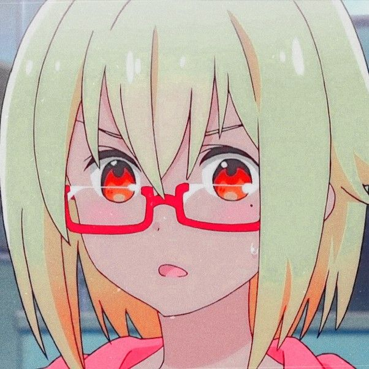
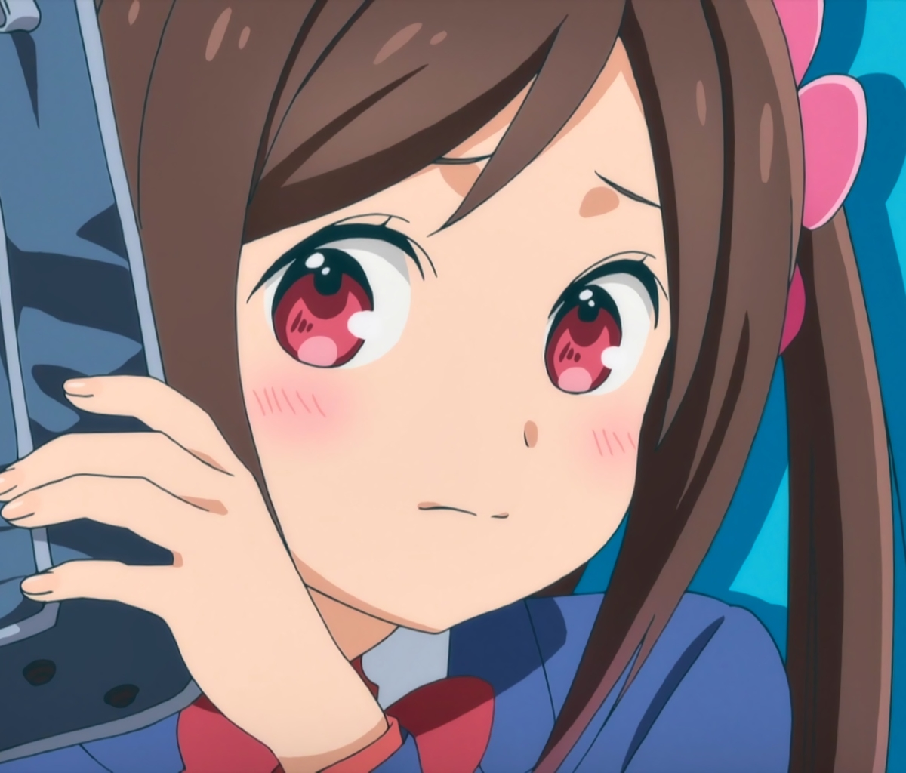
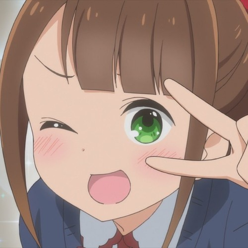
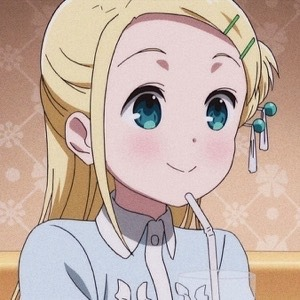

Nombre
de la
mona china
|
Imagen
|
Descripción
|
Sunao Nako
|

|
Mainly seen as a delinquent, Sunao Nako usually wears a slightly stern or disinterested look on herface. She has orange–blonde hair cut just above her
shoulders and amber eyes.She has bangs swept just between her eyes, and a small tuft of hair sticks out at the middle on the side of her head. Nako has a
small beauty mark under her left eye. She usually wears an orange, woolen trouser with a short skirt underneath it for her school uniform. She also wears
medium length stockings and brown shoes. When at the pool, she wears a short lime skirt with a little white ribbon on her left side. She also wears a white
crop top with a green ribbon in the middle.
|
Hitori Bocchi
|

|
Una chica de escuela secundaria que sufre de un tipo de fobia social llamado Taijin Kyofusho, que le impide mantener diálogo o acercarse a gente que no
sea de su familia. El miedo que le provoca esto le produce temblores y hasta vómitos y desmayos. Su amiga le pide que haga amigos y enfrente sus
miedos o dejará de hablarle. Ella toma determinación para hacerse amiga de sus compañeros de clase, pero casi siempre falla debido a que se estresa
excesivamente. Cuando logra algo de lo que se propone, se desmaya de la emoción.
|
Aru Honshou
|

|
Es la vice–representante de la clase, y la segunda compañera en entablar relación con Bocchi. Es de carácter alegre y dulce, además de tomar como una
misión propia la inserción de Bocchi en la clase. Tiene la aptitud de ser muy despistada, siendo burlada frecuentemente por Nako.
|
Rakita Sotoka
|

|
Es una chica alta, rubia, de ojos turquesa con un peinado con unos adornos de color turquesa en el cabello y unos sujetadores verdes, con el uniforme
escolar.
|
Peko Onaka
|
|
Compañera de Bocchi que ama los dulces. Su nombre se deriva de onaka pekopeko que se connota como "muy hambriento".
|